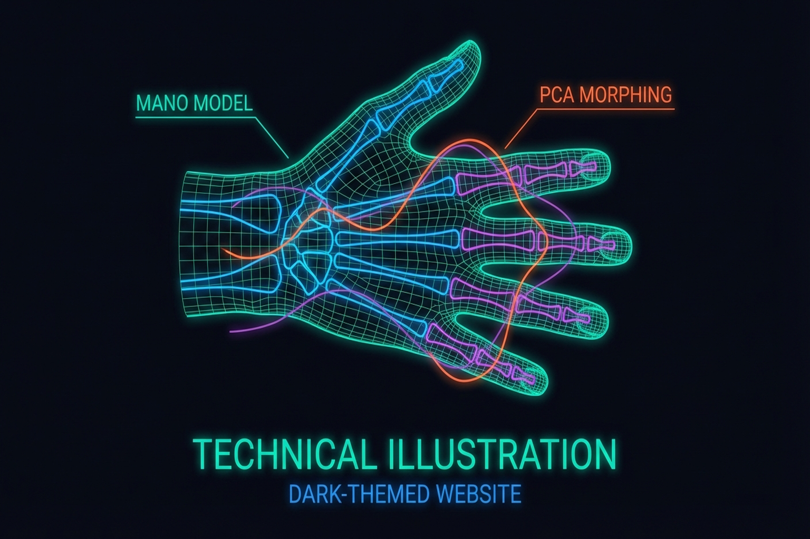
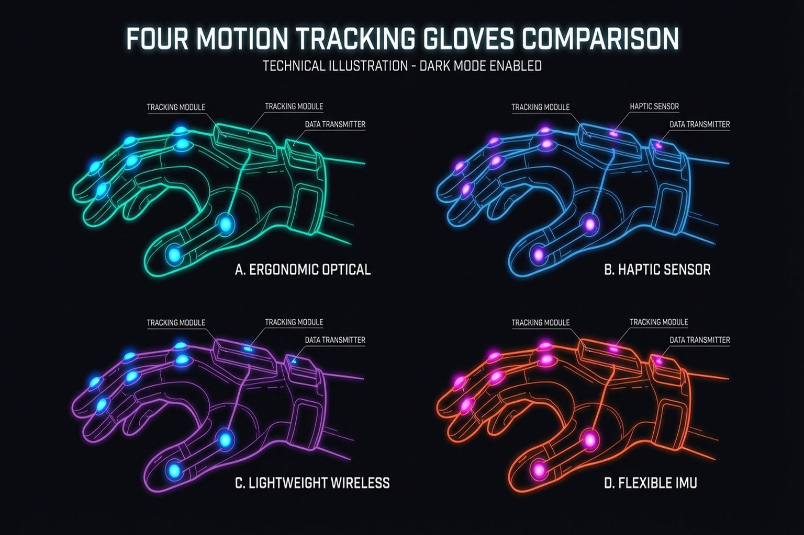
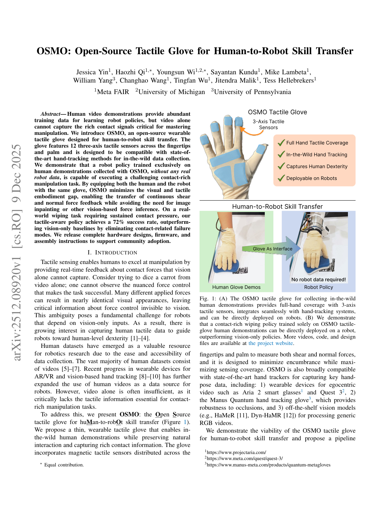
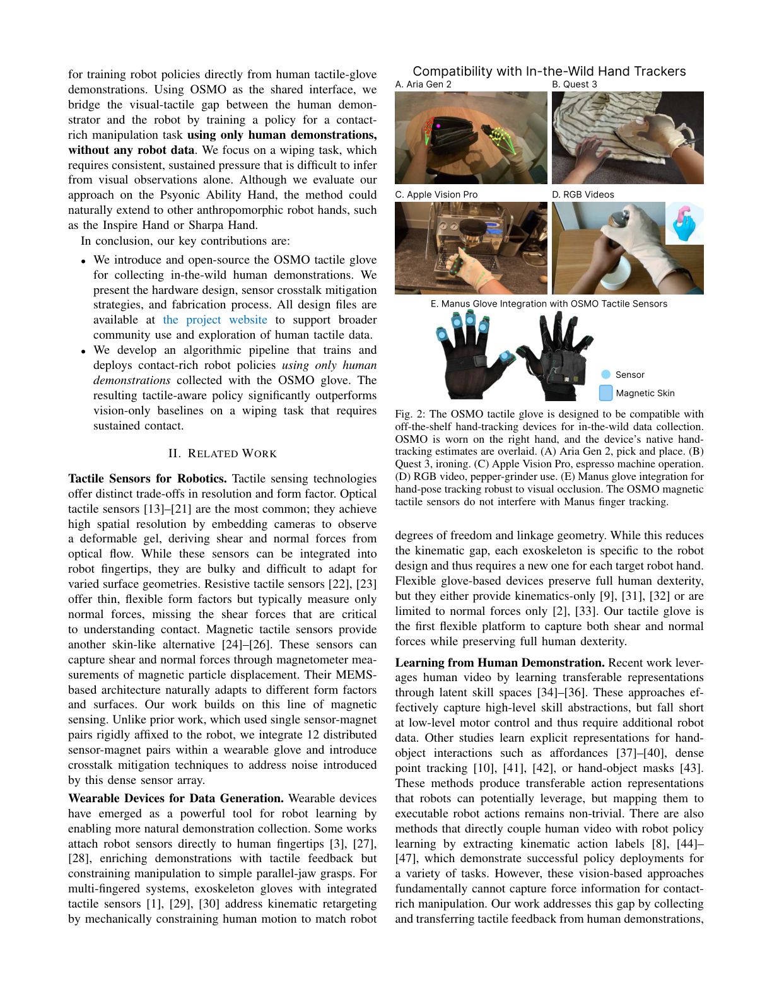
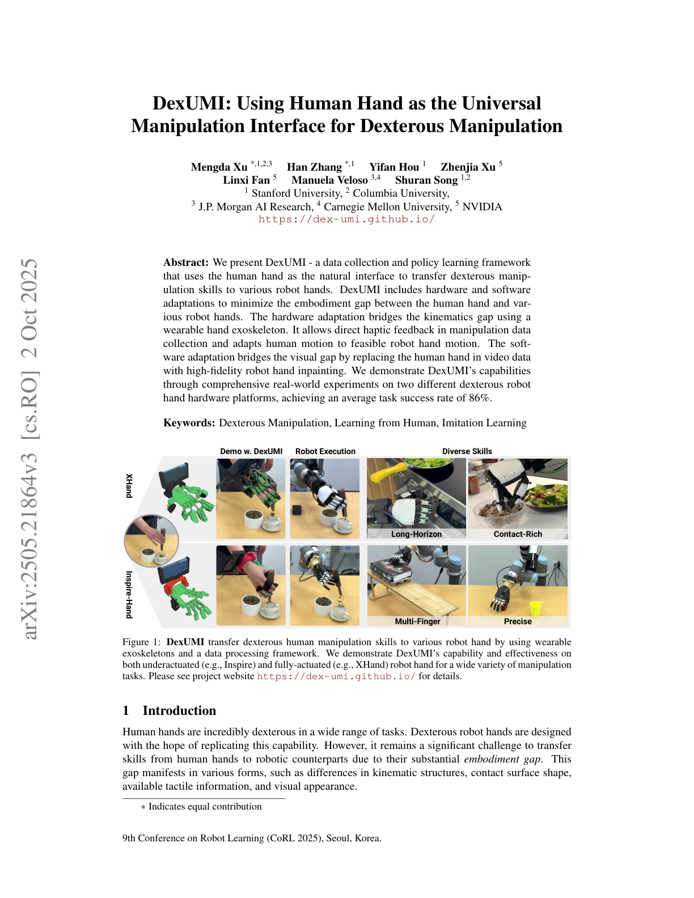
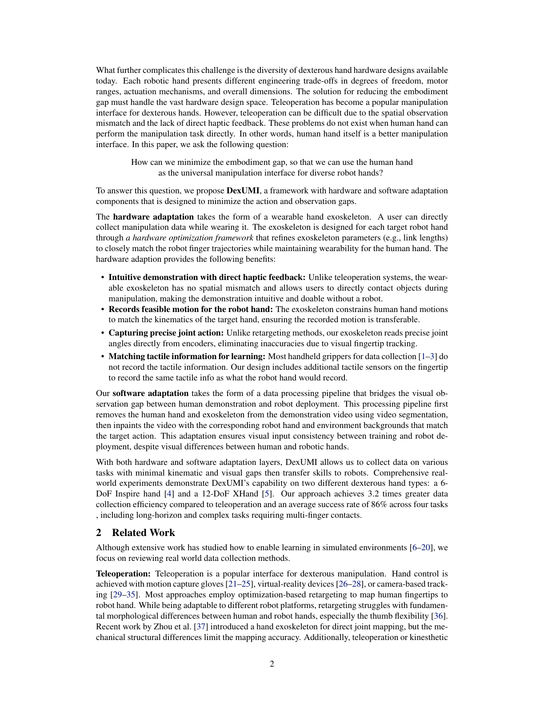
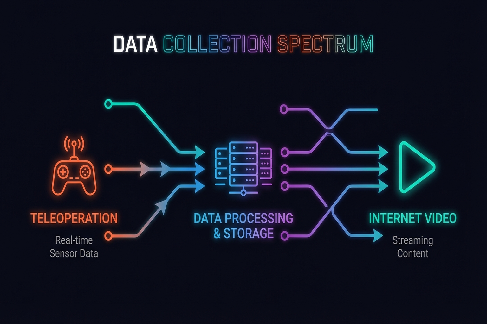
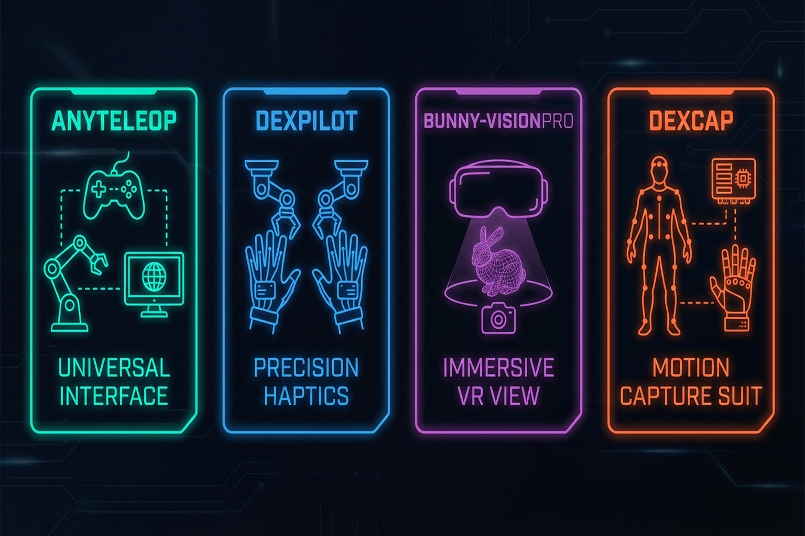

Chapter 6: Human Hand Data Collection — Teaching by Demonstration
Overview
The most intuitive way to teach robots to manipulate is to show them human demonstrations. Yet transferring the 27-DoF motion and tactile information of the human hand to a robot presents fundamental challenges. This chapter covers human hand modeling (MANO #17), motion tracking gloves, tactile gloves, exoskeletons, and teleoperation systems, surveying the data pipeline from human to robot.
After reading this chapter, you will be able to... - Describe the MANO hand model's structure and applications. - Compare the characteristics of major motion tracking gloves. - Understand tactile glove designs (STAG, OSMO #18) and their cross-embodiment potential. - Evaluate the strengths and limitations of exoskeleton and teleoperation approaches.
6.1 The Human Hand Model: MANO (778 Vertices, 16 Joints)
MANO [1] is a statistical human hand model learned from 1,000 3D scans (SIGGRAPH Asia 2017):
- 778 vertices, 16 joints
- PCA shape space: Low-dimensional representation of inter-individual hand size/shape variation
- Pose blend shapes: Skin deformation modeling as a function of joint angles
- Compatible with the SMPL full-body model (SMPL+H)

MANO serves as the foundation for virtually all human hand research — hand pose estimation, human-robot retargeting, and tactile transfer (UniTacHand's MANO UV map) (Chapter 10.4).
6.2 Motion Tracking Gloves: From Stretchable Sensors to Commercial Products
Seminar 2 (Taejoon) systematically reviewed the current state of motion tracking gloves.
Stretchable Liquid-Metal Sensor Glove (2024)
Published in Nature Communications[2]:
- 9 eGaIn (eutectic gallium-indium) liquid-metal sensors
- 9 DoF tracking, adapts to all hand sizes (one-size-fits-all)
- Joint angle error: 4.16 degrees, fingertip position error: 4.02 mm
- Bayesian refinement + Kalman filter
Key Paper: Various. (2024). "Stretchable Liquid-Metal Sensor Glove." Nature Communications. A 9-sensor eGaIn glove adapting to all hand sizes. The 4.02 mm fingertip error is sufficient for most manipulation demonstrations.
Commercial Glove Comparison
Seminar 2 compared three commercial gloves:
| Glove | Sensor Type | Sensors | DoF | Notes |
|---|---|---|---|---|
| Rokoko | IMU | 7 | 6 | Lightest solution |
| Manus | Stretch/flex | 16 | — | NVIDIA Isaac Teleop official glove (GTC 2026) |
| StretchSense | EMF | — | 25 | Highest DoF |
NVIDIA's designation of Manus as the official data glove for Isaac Teleop at GTC 2026 signals industrial standardization.

Korean Research: ML-Based Wearable Sensors
Seoul National University research [2024, PMC] implemented real-time hand motion recognition with ML-based wearable sensors, bridging the gap between lab research and practical applications.
6.3 Tactile Gloves: STAG, OSMO, and the Open-Source Approach
Beyond motion tracking, collecting tactile information during human grasping is the next step.
STAG (2019)
Sundaram et al. [3] (Nature, 2019):
- 548 piezoresistive sensors: High-resolution pressure distribution across the human hand
- Grasp-finger correlation analysis
- Pioneering tactile demonstration dataset for robot learning
Ruppel et al.[21] proposed a 169-sensor reduced version, exploring the trade-off between sensor count and information loss.
OSMO Glove (2025)
OSMO [arXiv:2512.08920] takes the innovative approach of using the same glove on both human and robot hands:
- 12 three-axis magnetic sensors: Simultaneous normal and shear force measurement
- MuMetal shielding against external magnetic interference
- Core concept — Embodiment Bridge: Using identical sensing gloves on human and robot simplifies the cross-embodiment problem
- Open-source: Reproducible design
Key Paper: OSMO. (2025). "OSMO: Open-Source Multi-axis Tactile Glove." arXiv:2512.08920. A 12-sensor three-axis magnetic tactile glove usable on both human and robot hands. Presents a new paradigm for cross-embodiment tactile transfer.
Key insight from Seminar 2: Using identical sensing gloves on human and robot simplifies the cross-embodiment problem. When tactile data is collected from human demonstrations and the same glove is mounted on a robot hand for policy learning, the tactile domain gap is eliminated (Chapter 10.4).


TacCap (2025)
TacCap [arXiv, Mar 2025] implements FBG (Fiber Bragg Grating) optical tactile sensors in a fingertip thimble form factor:
- FBG fiber-optic tactile sensors: High sensitivity and fast response
- Mountable on both human and robot fingers: Cross-embodiment approach similar to OSMO
- EMI immune (electromagnetic interference immune): Fully immune to electromagnetic interference due to optical sensing — usable in MRI environments or near strong electromagnetic fields
- Thimble form factor for easy attachment to existing gloves or robot fingertips
TacCap occupies a complementary position to OSMO's magnetic sensors. In environments where magnetic sensors are vulnerable to external fields, FBG optical sensing provides a robust alternative.
VTDexManip (2025)
VTDexManip [ICLR 2025] is the first large-scale visual-tactile human demonstration dataset:
- 565,000 frames: Simultaneous visual and tactile data collection
- 10 tasks, 182 objects: Covering diverse manipulation scenarios
- First visual-tactile human demonstration dataset: While prior datasets provided either visual or tactile data, this integrates both modalities
- Serves as a benchmark for cross-embodiment policy learning
VTDexManip provides a concrete answer to "how to utilize demonstration data collected with tactile gloves." The 565K frames represent sufficient scale for large-scale imitation learning.
FSR Optimization
Tang et al.[5] and Chen et al.[5] addressed the optimal placement of FSR sensors, exploring how to extract maximum information from limited sensors — answering the "high spatial resolution vs. optimized sensor count/position" trade-off.
6.4 Exoskeleton Approaches: DexUMI #8, ExoStart #9, DEXOP #10
Exoskeletons mechanically connect to the human hand, directly capturing motion.
DexUMI (2025)
Xu et al.[5] — "Human Hand as Universal Interface":
- Wearable exoskeleton resolves the kinematic gap
- SAM2 inpainting resolves the visual gap — erasing the human hand from camera images and replacing it with the robot hand
- 86% success on Inspire and XHand
- 3.2x faster data collection than teleoperation


ExoStart (2025)
Si et al.[5] learn dexterous manipulation policies from just 10 exoskeleton demonstrations:
- ~10 exoskeleton demos
- MuJoCo dynamics filtering
- Auto-curriculum RL
- ACT vision student
- Zero-shot real → >50% success on 6 of 7 tasks
This pipeline exemplifies Real-Sim-Real transfer (Chapter 9.4).
DEXOP (2025)
DEXOP[8] uses a four-bar linkage to directly mechanically couple human and robot fingers:
- 8x faster data collection than teleoperation
- Direct contact feedback
- 51.3% vs. 42.5% success (vs. teleoperation)
AirExo / AirExo-2 (SJTU, 2024-2025)
AirExo [ICRA 2024] and AirExo-2 [CoRL 2025] are low-cost passive exoskeletons developed at Shanghai Jiao Tong University:
- Approximately $300 fabrication cost: Constructed from 3D-printed parts and low-cost sensors
- Passive actuation: Records human motion without motors
- In-the-wild human demonstration collection: Enables data capture outside laboratory settings in everyday environments
- Key finding from AirExo-2: 3 min teleop + in-the-wild data >= 20 min teleop only — empirically demonstrating that expensive teleoperation data can be supplemented or replaced by natural environment demonstrations
- Full upper-body exoskeleton covering both arm and hand
The AirExo series exemplifies the democratization of data collection. The finding that in-the-wild data from a $300 exoskeleton can complement or replace costly teleoperation data presents a new solution to the scalability problem of robot learning data.
ACE (UCSD, CoRL 2024)
ACE [CoRL 2024] is a universal teleoperation interface developed at the University of California San Diego:
- Hand-facing camera + exoskeleton: Tracks finger poses via hand-facing camera while capturing arm motion through the exoskeleton
- Single system supports diverse robot platforms: Enables teleoperation of humanoids, robot arms, grippers, and quadrupeds
- Cross-embodiment switching occurs at the software level, requiring no hardware changes
- Intuitive operation: Natural human motions map directly to robot actions
ACE's key contribution is enabling control of any robot through a single interface. This maximizes the reusability of collected human demonstration data.
NuExo (Nubot Lab, ICRA 2025)
NuExo [ICRA 2025] is an active exoskeleton system developed at Nubot Lab:
- 5.2 kg backpack-style active exoskeleton: Motor-driven with haptic feedback
- 100% upper-limb ROM (Range of Motion): Captures the full range of human upper-limb motion without restriction
- Successful 2.5 mm screw tightening: Performs extremely precise manipulation tasks remotely
- Backpack form factor ensures mobility across diverse environments
NuExo takes the opposite approach from passive exoskeletons (AirExo). Active actuation and haptic feedback push the upper bound of precision, specializing in fine manipulation demonstration collection.
HumanoidExo (NUDT, 2025)
HumanoidExo [arXiv, Oct 2025] is a full-body exoskeleton developed at the National University of Defense Technology (NUDT):
- Lightweight exoskeleton + LiDAR: Exoskeleton captures upper body/arm motion; LiDAR captures lower body/locomotion trajectories
- Full-body trajectory collection: Simultaneously records upper-limb manipulation and lower-limb locomotion
- Locomotion learning from exoskeleton data alone: Directly learns locomotion policies from human demonstrations without separate gait simulation
- Optimized for full-body teleoperation of humanoid robots
HumanoidExo extends the application scope of exoskeletons from hands/arms to the entire body. As humanoid robots approach commercialization, the importance of full-body demonstration collection infrastructure is growing.
Key Perspective: DexUMI, ExoStart, and DEXOP each bridge the human-robot gap differently, but all share the goal of overcoming teleoperation's throughput bottleneck (~10 demos/hr). AirExo addresses cost barriers, ACE tackles platform compatibility, NuExo pushes precision limits, and HumanoidExo enables full-body applications.
6.5 Large-Scale Data: From Internet Videos to Egocentric Capture
Shaw et al. [2024, CMU] proposed extracting human hand motions from internet videos and retargeting them to robot hands. The potential lies in scalability — millions of hand manipulation videos exist online, and converting them to robot learning data could fundamentally solve the teleoperation bottleneck.
ImMimic [14] augments data by interpolating between large-scale human trajectories and a few teleoperation trajectories. As discussed in Seminar 1, this represents the direction of synergistically using human data instead of expensive teleop data (Chapter 10.2).
DexH2R[15] implements task-oriented human-to-robot dexterous transfer, mapping the intent of human demonstrations to robot actions.
EgoDex (Apple, 2025)
EgoDex [Apple, 2025] is a large-scale egocentric hand manipulation dataset leveraging Apple Vision Pro and ARKit:
- 829 hours, 90M (90 million) frames: The largest hand manipulation dataset to date
- 194 tasks: Spanning from everyday object manipulation to tool use
- 30 Hz per-finger tracking: Real-time 3D trajectory recording for each finger via ARKit hand tracking
- Collected with consumer hardware (Apple Vision Pro), ensuring scalability
EgoDex opens a new middle ground between internet video and teleoperation approaches. It is as large-scale as video data while providing accurate 3D finger trajectories like teleoperation. The 829-hour scale exceeds existing robot demonstration datasets by orders of magnitude, approaching the data volume required for foundation model training.

6.6 Teleoperation: AnyTeleop, DexPilot, Bunny-VisionPro
Teleoperation remains the most traditional collection method and yields the highest data quality.
AnyTeleop (2023)
Qin et al. [2023, RSS] built a general-purpose vision-based teleoperation system:
- Dex-Retarget: Maps human keypoints to robot joint positions
- Compatible with diverse robot hands
- As discussed in Seminar 1, naive retargeting has limitations — kinematic differences between human and robot can violate physical feasibility
DexPilot (2020)
Handa & Van Wyk [2020, NVIDIA] achieved 23-DOA teleoperation from bare-hand depth images. Requires only an RGB-D camera, maximizing accessibility.
Bunny-VisionPro (2024)
Ding et al. [2024, UCSD] implemented bimanual teleoperation via Apple Vision Pro with haptic feedback, achieving research-grade teleoperation using consumer hardware.
DexCap (2024)
Wang et al. [2024, Stanford] created a portable mocap system enabling 3x faster data collection than teleoperation, with policy learning from 30 minutes of data.
DOGlove (2025)
A low-cost open-source haptic feedback glove that provides tactile feedback to operators, improving teleoperation quality.
Feel Robot Feels (2026)
A tactile feedback array glove that closes the haptic loop, enabling operators to directly feel what the robot touches.

UMI-FT [Choi et al., 2025] occupies a unique position in this landscape: a handheld demonstration device that preserves human dexterity with natural haptic feedback (no teleoperation latency), collects 6-axis force/torque data via CoinFT sensors, and scales to in-the-wild environments. Hundreds of people can collect demonstrations daily without requiring robots or trained operators. The embodiment gap is small because the device mimics the robot's gripper form factor [Choi, SNU Seminar 2026].

| System | Input Device | Haptic Feedback | Throughput | Cost |
|---|---|---|---|---|
| AnyTeleop | RGB camera | None | Baseline | Low |
| DexPilot | RGB-D camera | None | Baseline | Low |
| Bunny-VisionPro | Vision Pro | Yes | Baseline | Medium |
| DexCap | Motion capture | None | 3x | Medium |
| DexUMI | Exoskeleton | Direct contact | 3.2x | Medium |
| DEXOP | 4-bar linkage | Direct contact | 8x | Low |
| AirExo | Passive exoskeleton | None | High (in-the-wild) | Very low (~$300) |
| ACE | Camera+exoskeleton | None | Baseline | Medium |
| NuExo | Active exoskeleton | Yes (haptic) | Baseline | High |
| EgoDex | Vision Pro + ARKit | None | Very high (829h) | Medium |
| Internet video | None (observation) | None | Unlimited | Very low |
Summary and Outlook
Human hand data collection sits on a trade-off between throughput and data quality. Teleoperation provides high quality but scales poorly at ~10 demos/hr; internet video offers unlimited scale but lacks action labels and tactile information. The OSMO glove's Embodiment Bridge and DEXOP's mechanical coupling propose new solutions to this trade-off.
AirExo's $300 passive exoskeleton and EgoDex's 829-hour Vision Pro dataset are simultaneously advancing democratization and scaling of data collection. Furthermore, VTDexManip's 565K-frame visual-tactile dataset and TacCap's EMI-immune FBG sensors are accelerating the practical deployment of tactile-inclusive demonstration collection.
NVIDIA Isaac Teleop + MANUS standardization, internet video mining at scale, and extending synthetic data (780K trajectories/11 hours) to the tactile domain are the key directions for resolving the data bottleneck.
The next chapter examines how robots learn to manipulate from such collected data (Chapter 7: Learning to Manipulate).
References
- Romero, J., Tzionas, D., & Black, M. J. (2017). Embodied hands: Modeling and capturing hands and bodies together. SIGGRAPH Asia 2017.
- Various. (2024). Stretchable liquid-metal sensor glove. Nature Communications. https://doi.org/10.1038/s41467-024-50101-w
- Sundaram, S., Kellnhofer, P., Li, Y., Zhu, J.-Y., Torralba, A., & Matusik, W. (2019). Learning the signatures of the human grasp using a scalable tactile glove. Nature, 569, 698-702.
- Ruppel, P., et al. (2024). Reduced tactile sensor array for grasp analysis. Sensors.
- Yin, J., Qi, H., Wi, Y., Kundu, S., Lambeta, M., Yang, W., Wang, C., Wu, T., Malik, J., & Hellebrekers, T. (2025). OSMO: Open-source tactile glove for human-to-robot skill transfer. arXiv preprint. arXiv:2512.08920. [#18](https://terry.artlab.ai/en/posts/2512-osmo-tactile-glove)
- Xu, M., Zhang, H., Hou, Y., Xu, Z., Fan, L., Veloso, M., & Song, S. (2025). DexUMI: Using human hand as the universal manipulation interface for dexterous manipulation. arXiv preprint. [#8](https://terry.artlab.ai/en/posts/2505-dexumi)
- Si, Z., et al. (2025). ExoStart: From 10 exoskeleton demos to dexterous robot manipulation. [#9](https://terry.artlab.ai/en/posts/2506-exostart)
- Fang, H.-S., Romero, B., Xie, Y., et al. (2025). DEXOP: A device for robotic transfer of dexterous human manipulation. arXiv preprint. arXiv:2509.04441. [#10](https://terry.artlab.ai/en/posts/2509-dexop)
- Qin, Y., et al. (2023). AnyTeleop: A general vision-based dexterous robot hand-arm teleoperation system. RSS 2023.
- Handa, A., & Van Wyk, K. (2020). DexPilot: Vision-based teleoperation for dexterous manipulation. ICRA 2020.
- Ding, Z., et al. (2024). Bunny-VisionPro: Real-time bimanual dexterous teleoperation for imitation learning. arXiv preprint. arXiv:2407.03162.
- Wang, C., et al. (2024). DexCap: Scalable and portable mocap data collection system. RSS 2024.
- Shaw, K., Bahl, S., & Pathak, D. (2024). Learning dexterity from human hand motion in internet videos. arXiv preprint. arXiv:2404.xxxxx.
- Liu, Y., et al. (2025). ImMimic: Large-scale human trajectory + few-shot teleoperation interpolation.
- Li, Y., et al. (2024). DexH2R: Task-oriented dexterous manipulation from human to robots. arXiv preprint.
- Various. (2025). DOGlove: Low-cost open-source haptic feedback glove.
- Various. (2026). Feel Robot Feels: Tactile feedback array glove.
- Murphy, L., et al. (2025). Capacitive tactile sensing for teaching by demonstration. arXiv preprint.
- Tang, M., et al. (2025). FSR sensor optimization for grasp classification. IEEE Journal of Biomedical and Health Informatics.
- Chen, H., et al. (2025). Capacitive sensor for lift-risk identification. Applied Ergonomics.
- Various. (2024). ML-based wearable sensors for real-time hand motion recognition. PMC. (Seoul National University)
- TacCap. (2025). TacCap: FBG optical tactile sensor thimble for human and robot fingertips. arXiv preprint, Mar 2025.
- VTDexManip. (2025). VTDexManip: A large-scale visual-tactile dataset for dexterous manipulation from human demonstrations. ICLR 2025.
- Fang, J., et al. (2024). AirExo: Low-cost exoskeletons for learning whole-arm manipulation in the wild. ICRA 2024.
- Fang, J., et al. (2025). AirExo-2: Scaling up generalizable manipulation skills via purely kinesthetic demonstrations in the wild. CoRL 2025.
- Zhao, Q., et al. (2024). ACE: A cross-platform visual-exoskeleton system for low-cost dexterous teleoperation. CoRL 2024.
- NuExo. (2025). NuExo: A 5.2 kg active upper-limb exoskeleton for dexterous teleoperation with 100% ROM. ICRA 2025.
- HumanoidExo. (2025). HumanoidExo: Lightweight exoskeleton with LiDAR for full-body humanoid teleoperation and locomotion learning. arXiv preprint, Oct 2025.
- EgoDex. (2025). EgoDex: Learning dexterous manipulation from large-scale egocentric hand data via Apple Vision Pro. Apple, 2025.